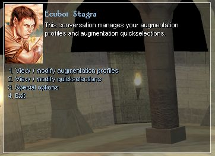
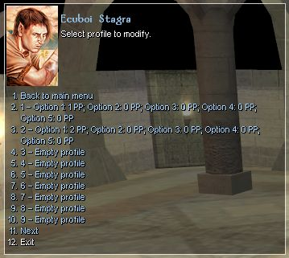
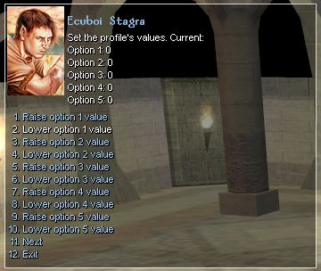
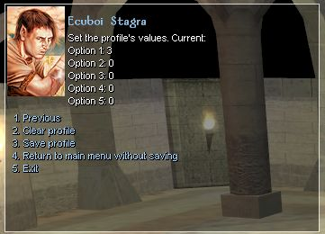
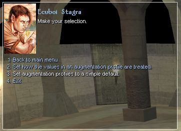
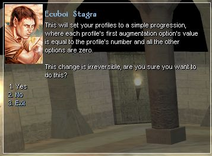
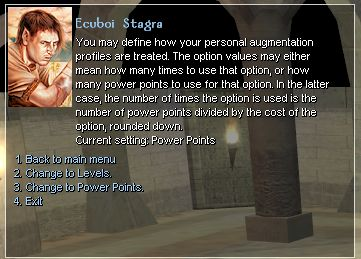

Setting up and managing augmentation profiles is done via the augmentation options. This starts a conversation through which you can manage the profiles.

When you are presented with a list of the avaliable profiles, it will look something like this:

Once you have selected which profile you are going to change, you should have a menu similar to this:

The next page of that conversation, where you can clear your choices and save the profile, looks like this:

The options choice from the initial page leads to this screen:

If you use the simple default option, augmentation profile 1 is set to a value of 1 in the first augmentation option and zero in the others. Augmentation profile 2 is then set to a value if 2 in the first augmentation option and zero in the others. This pattern is then repeated over all 50 slots. This may be a good choice when starting a new psionic character in order to save you customizing each profile individually. These simple defaults overwrite any profiles you may have already set up, but it does not change quickslot augmentations.

Setting how augmentation profiles are treated is a matter of player choice. You can have it set such that the value in the profile for the augmentation is the number of times that augmentation option is applied. The alternative is to have it set such that the value is the total number of points spent on that augmentation option (note that this does not include the base cost of the power).

For example, consider the power "Mental Disruption" manifested by a 9th level Psion with augmentation profiles set to levels rather than points.
Augment: You can augment this power in one or both of the following ways.
1. For every 2 additional power points you spend, this power's save DC increases by 1.
2. For every 2 additional power points you spend, this power's range and the radius of its area both increase by 5 feet.
As a 9th level manifester, they can spend up to 9 points in a single power. Mental Distruption is a level 2 power, so has a base cost of 3. This means up to 6 remaining points that can be used for augmentation if desired.
One augmentation profile might be to take the first option once and the second option twice. This would have a total cost of (1x2)+(2x2)+3 = 9 power points and would result in a +1 increase in the save DC and a +10 feet increase in the range.
Another augmentation profile might be to augment the first option three times. This would also have a total cost of 9 power points ( (3x2)+(0x2)+3 = 9 ) however, it would have a +3 bonus to save DC but with no additional range. This would be most suited to use against fewer tougher opponents.
If the psion then changed their augmentation profiles to use points rather than levels, that would change what the augmentation does. In that case, the first profile above means that the range is increased by 5 feet and the DC stays the same; the power then costs 5 points overall. This is because 1 point is not enough to augment the first option, and so it is rounded down to zero. The 2 points in the second option is only enough to apply one augmentation, and adds 2 points to the cost.
In cases where there is only one augmentation level avaliable, for example to change the type of creature effected, augmentation is capped at that level. If you try to augment a power that cannot be augmented, or try to use augmentation options that do not apply to that power, then the additional augmentation is not used. In these situations, you dont spend additional power points for no result, nor do you waste time attempting to manifest the power.
Previous Page Next Page